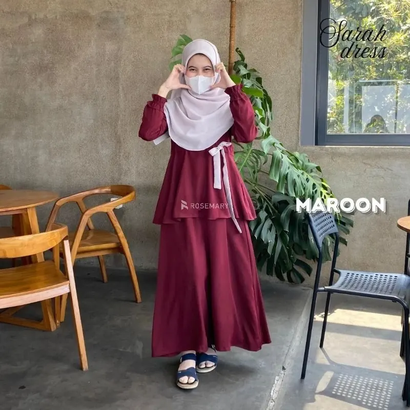
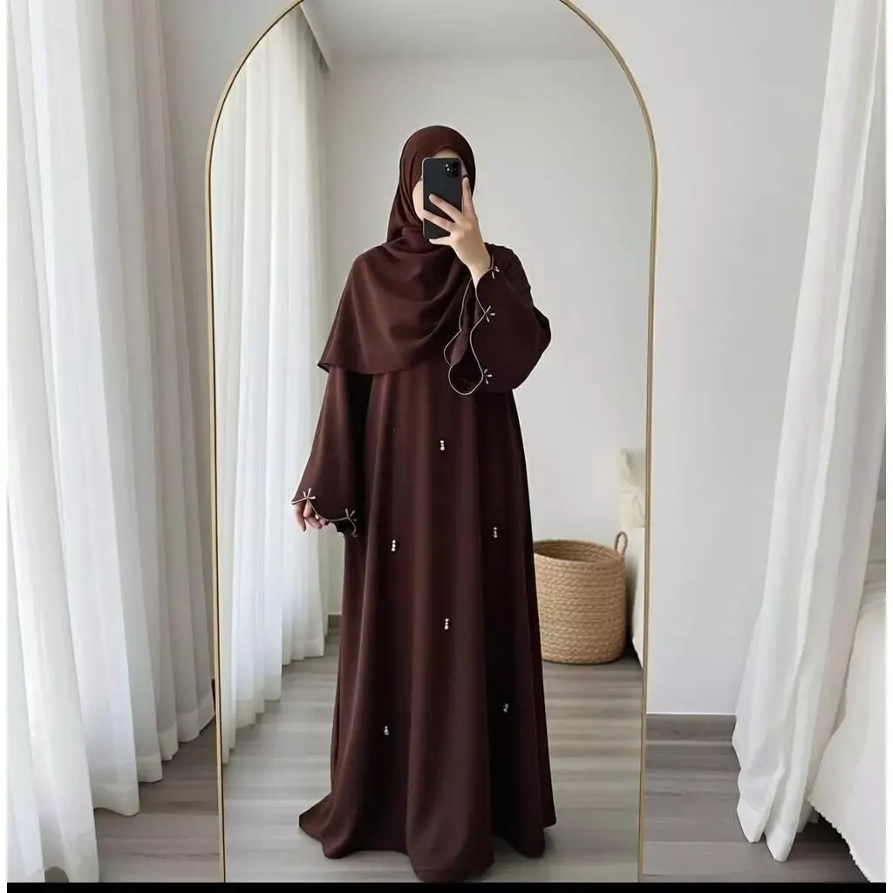
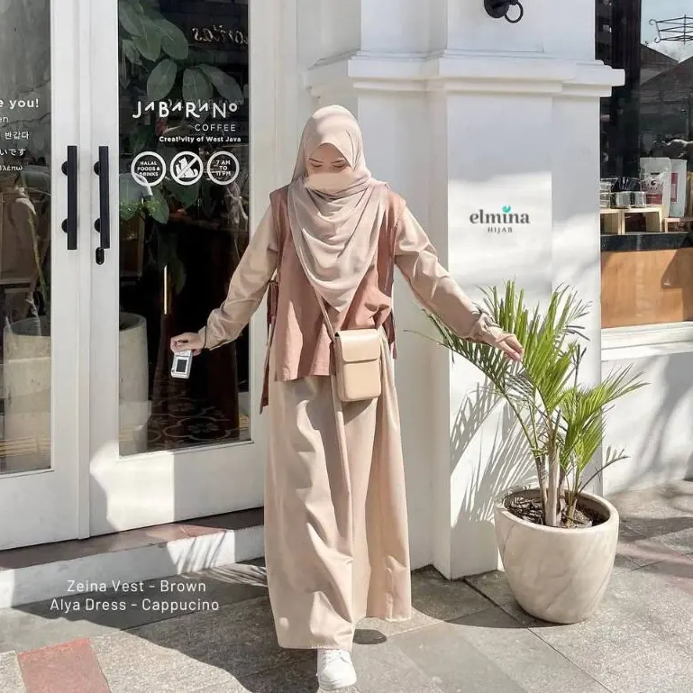
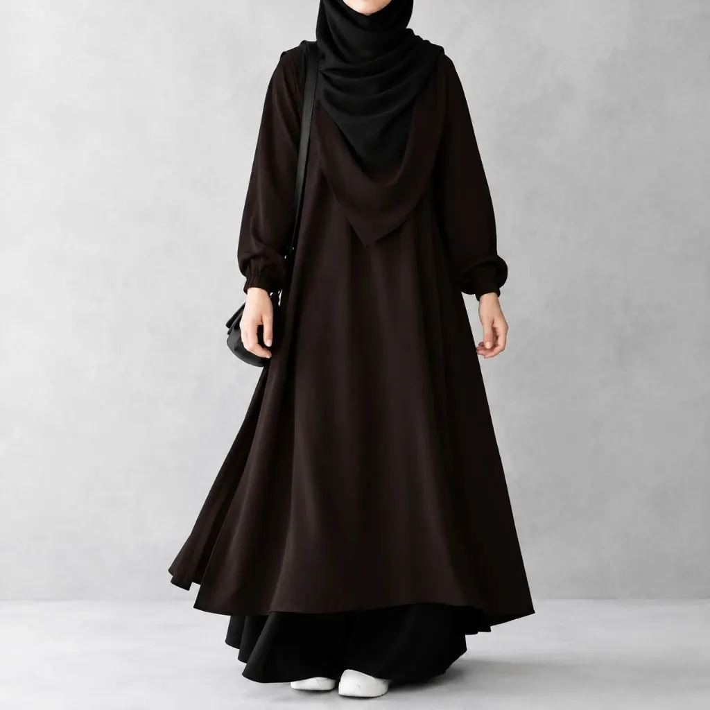
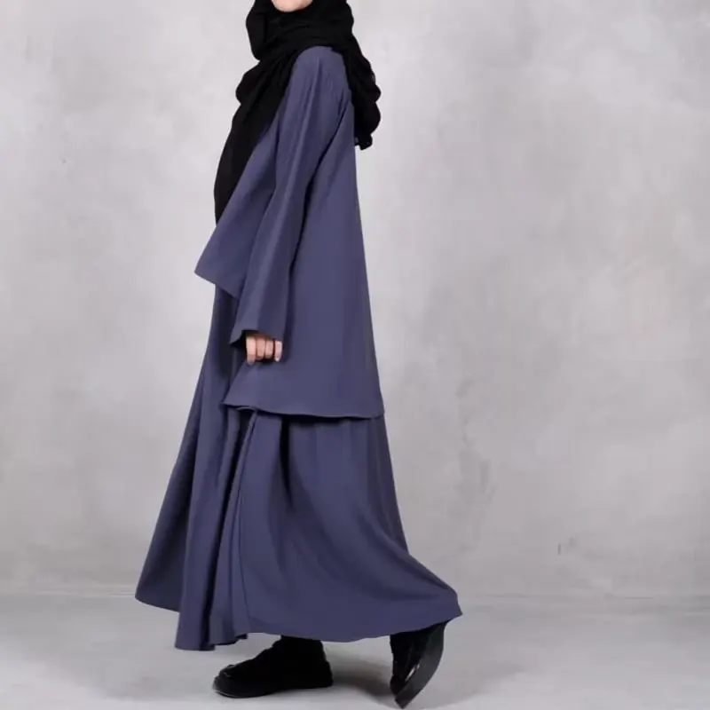
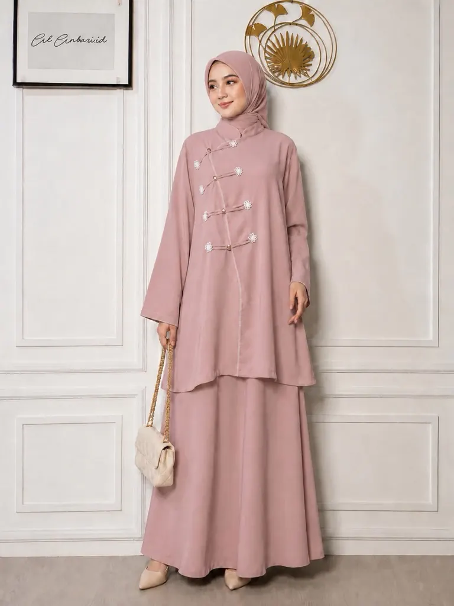
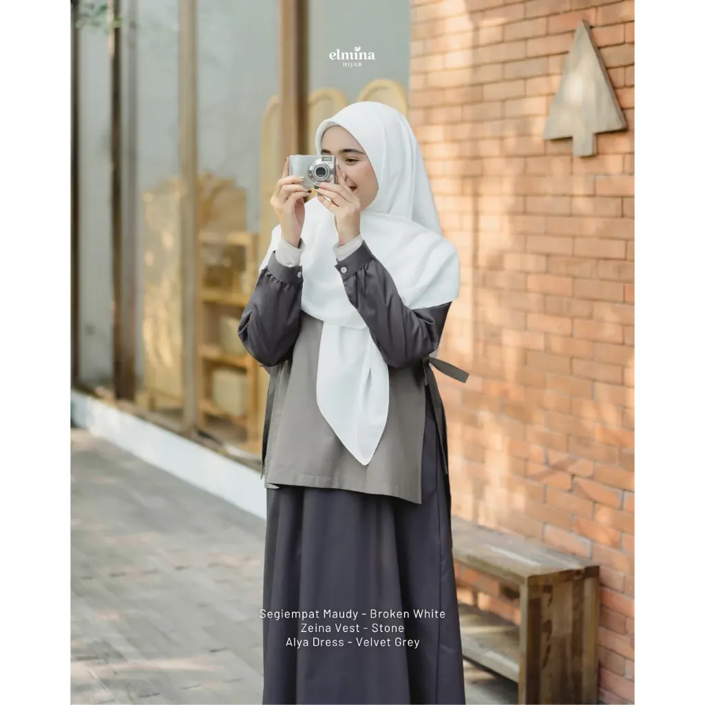

BEST SELLERMora Abaya Maroon
Maroon · Abaya Loose
MAIMORA · MODEST ISLAMIC CAMPUS
Gamis muslimah loose, panjang, dan nyaman untuk menemani kuliah, kajian, organisasi, perpustakaan, sampai hangout setelah kelas.

MODEST CAMPUS COLLECTION
Dirancang dengan siluet longgar, panjang, dan clean agar tetap nyaman untuk aktivitas kampus tanpa kehilangan karakter Gen Z.
✦ Koleksi di bawah menggunakan foto produk yang kamu kirim.

BEST SELLERMaroon · Abaya Loose

CAMPUS PICKCappuccino · Campus Set

Black · Full Length Loose

NEWMidnight Blue · Loose Gamis

GEN Z PICKDusty Rose · Modest Set

Velvet Grey · Elegant Modest
Maroon · Everyday Modest
MODEST BY CHOICE
MaiMORA ingin membuat modest wear terasa dekat dengan keseharian Gen Z muslimah: sederhana, nyaman, sopan, dan tetap punya style.
MODEST CAMPUS STYLE GUIDE
Gamis loose yang sama bisa kamu styling untuk berbagai aktivitas tanpa perlu terlihat berlebihan.
MAIMORA STYLE JOURNAL
Panduan modest fashion untuk muslimah yang ingin berpakaian sopan, nyaman, dan tetap punya gaya sendiri.
Formula padu padan gamis, hijab, sepatu, dan tas untuk hari kuliah yang padat.
Baca artikel ↗Kenali hal yang perlu diperiksa sebelum memilih bahan dan ukuran busana.
Baca artikel ↗Ide styling abaya yang rapi untuk kuliah, kajian, dan acara semi-formal.
Baca artikel ↗OUR MODEST VALUES
Look yang dirancang untuk dipadukan dengan hijab yang rapi dan menutup dada.
Potongan longgar dan tidak ketat untuk tampilan modest yang nyaman.
Fokus pada panjang, lengan panjang, dan material yang nyaman untuk muslimah.
MUSLIMAH CAMPUS LOVE
★★★★★“Aku suka karena modelnya loose dan tetap cute buat kuliah. Tinggal pakai hijab dan sneakers.”
— Aulia · Mahasiswa
★★★★★“Cocok buat kajian dan organisasi. Kelihatan rapi tanpa terasa terlalu formal.”
— Naya · Mahasiswi
★★★★★“Warna dusty pink-nya soft banget. Gamisnya juga nyaman dipakai seharian.”
— Caca · Mahasiswi
NEED TO KNOW
Campus Edit menggunakan konsep modest dengan siluet longgar dan panjang. Detail ukuran tetap perlu dicek melalui size chart sebelum order.
Bisa. Koleksi dibuat dengan vibe hijab-friendly dan cocok dipadukan dengan hijab yang menutup dada.
Bisa. Hubungi admin melalui WhatsApp untuk size chart dan stok terbaru.
Klik tombol WhatsApp di kanan bawah dan template pesan akan otomatis terisi.